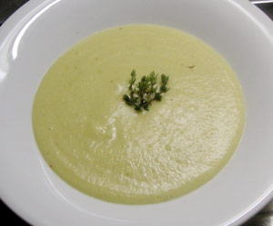

Kerbelwurzel-Suppe
4,5 von 6ca. 500 g geschälte kerbelwurzeln in stücke schneiden und mit einer zwiebel in butter 5 minuten andünsten. mit einem schluck weisswein ablöschen und etwas gemüse-bouillon beigeben. 6 dl wasser hinzugeben und ca. 15 minuten kochen. etwas rahm beigeben und mit dem stabmixer pürieren. mit salz, pfeffer und etwas zerstossenem kümmel abschmecken.
